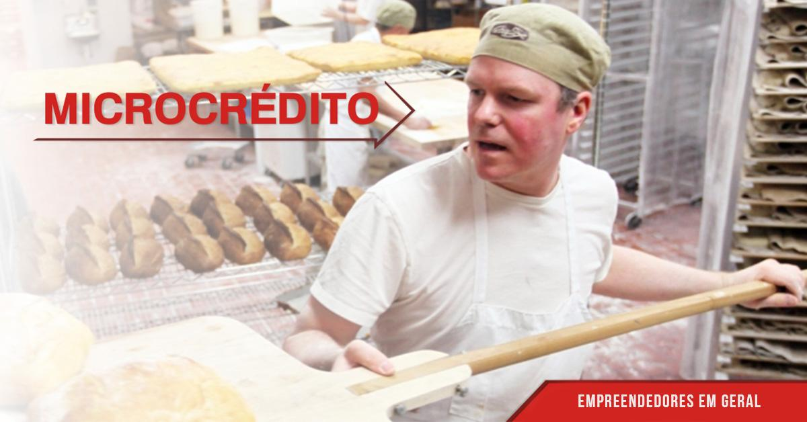

Microcrédito produtivo que olha o seu negócio, não só o Serasa
A ICC Serra — Banco do Povo — tem agente de crédito que vai até você, conversa com você, e libera de R$ 600 a R$ 20 mil com taxa fixa e parcela que cabe no caixa. Sem IOF. Sem burocracia de banco grande.
Leva 2 minutos. Um agente da sua cidade fala com você em até 24 horas.

Identificação
Se uma dessas frases já saiu da sua boca, este crédito é pra você:
"O banco nem respondeu meu pedido."
"Preciso comprar mercadoria pra esse mês, mas o caixa não aguenta."
"A máquina quebrou. Se eu parar, perco cliente."
"Não tenho como provar renda — sou autônomo."
"Se eu botar no cartão, os juros me comem vivo."
"Eu só quero crescer um pouquinho mais, mas não tem capital."
O problema não é o seu negócio. É que banco grande não sabe olhar pra ele. A gente sabe.
Como funciona
Como funciona o Crédito Olho no Olho
Conta sua ideia
Você preenche um formulário simples — nome, WhatsApp, cidade, o que precisa. Dois minutos e está feito. Nenhum documento nessa hora.
Agente vai até você
Um agente de crédito da ICC da sua cidade marca a visita. Vai até a sua loja, oficina ou casa. Conversa sobre o negócio, o fluxo de caixa, a finalidade do crédito. É essa análise — feita por um ser humano — que define se o crédito sai.
Crédito que cabe
Aprovado, o crédito é liberado com parcela ajustada ao que seu caixa aguenta. De R$ 600 a R$ 20 mil, de 3 a 24 meses, taxa fixa de até 3,99% a.m., sem IOF, sem surpresa no boleto.
Microcrédito Produtivo
Tudo que você precisa saber antes de solicitar
Quem pode pedir
- MEI formalizado
- Trabalhador autônomo (sem CNPJ)
- Pequeno empreendedor informal
- Microempresa com faturamento compatível
Para que serve
- Comprar mercadoria ou estoque
- Comprar ou consertar máquina e equipamento
- Pagar fornecedor e não perder prazo
- Ter capital de giro para o mês cheio
- Investir em insumos para ampliar a produção
- Capital fixo: bancada, geladeira, forno, computador
Documentos necessários
- RG ou CNH (documento com foto)
- CPF
- Comprovante de endereço recente
- Para MEI: CCMEI (Certificado do Microempreendedor Individual)
- Para informal: nota de compra, fotos do negócio ou indicação de cliente
Documentação confirmada com a área de operações antes da publicação. Condições sujeitas a alteração.
Condições do crédito
Leva 2 minutos. Sem compromisso.
Por que confiar
Por que confiar na ICC Serra?
OSCIP qualificada pelo Ministério da Justiça
Não somos financeira, não somos agiota. Somos uma instituição comunitária sem fins lucrativos reconhecida pelo governo federal.
25 anos atendendo na Serra Gaúcha
Desde 2001 no Banco do Povo. Quem já foi atendido indica. Quem indica volta.
13+ pontos de atendimento no RS
Caxias do Sul, Bento Gonçalves, Farroupilha, Garibaldi, Vacaria, Veranópolis, Lajeado, Marau e mais. Perto de onde você trabalha.
Agente de crédito humano — da sua região
Não um app. Não um algoritmo. Uma pessoa que vai até você, conhece o bairro, entende o negócio.
Convênio com o BRDE
Parceria com o Banco Regional de Desenvolvimento do Extremo Sul para ampliar o acesso ao microcrédito produtivo.
O que dizem quem já foi atendido
"Peguei o primeiro crédito pra repor o estoque depois do inverno. Deu certo, renovei mais duas vezes. O agente me conhece pelo nome, sabe do meu negócio. Não é banco — é parceiro mesmo."
"Trabalho como eletricista autônomo há 12 anos. Achei que banco nenhum ia me atender. O agente da ICC veio na minha casa, viu minha ferragem, conversou comigo. Consegui R$ 4 mil pra comprar material. Valeu muito."
"Já renovei três vezes. Comecei com R$ 2 mil pra comprar vasilhame e gás. Hoje atendo 40 marmitas por dia. A parcela sempre coube no meu caixa — nunca deixei de pagar."
Dúvidas
Perguntas que todo mundo faz antes de solicitar
Não tenho CNPJ. Posso pedir mesmo assim?
Sim. A ICC Serra atende MEI formalizado e trabalhadores informais. O que a gente analisa é o seu trabalho real — o negócio que você toca todo dia — não só um papel de registro.
Vão consultar o Serasa?
A análise considera o histórico de crédito, mas o Serasa não é o único critério. O agente conversa com você, entende a movimentação do negócio e avalia o conjunto. Muita gente com score baixo consegue crédito aqui porque o negócio é sólido.
Vou ter que ir lá no escritório várias vezes?
Não. Você preenche o formulário agora, em 2 minutos. O agente é que vai até você. A visita acontece na sua loja, oficina ou onde for mais fácil.
Simular meu crédito agora →A taxa é muito alta?
A taxa máxima é de 3,99% ao mês, fixa, sem IOF. Compara com o cartão de crédito rotativo — que começa em 10% ao mês — ou com cheque especial. A parcela é calculada para caber no seu caixa.
A ICC Serra é confiável? É de verdade?
É. A ICC Serra existe desde 2001 e é uma OSCIP qualificada pelo Ministério da Justiça — ou seja, uma organização sem fins lucrativos reconhecida pelo governo federal. Tem 13+ pontos físicos no RS e faz parte da rede ABCRED. Você também pode ligar: 54 3217-8787.
Quanto tempo demora para o dinheiro cair?
Em média 5 a 10 dias úteis depois da visita do agente, dependendo da documentação e da cidade. Nada de meses esperando em fila de banco.
Quero ver meu prazo — simular agora →O Banco do Povo não pergunta o que você tem. Pergunta o que você quer construir.
Você tem o negócio, o trabalho e a ideia. A ICC Serra tem o crédito — com agente que vai até você e parcela que cabe no caixa. Sem IOF. Sem ir ao banco. Sem esperar semanas por um não.
Conta sua ideia. Demora dois minutos.